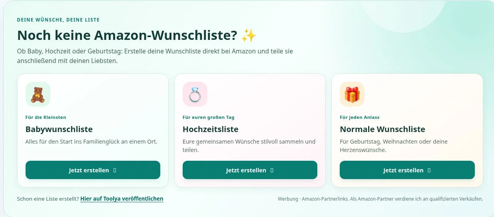

Amazon-Wunschliste bei Toolya veröffentlichen
Wenn du bereits eine öffentliche Wunschliste bei Amazon hast, kannst du ihren Link in ein Toolya-Wunschprofil eintragen. Andere können deine Liste im Toolya-Verzeichnis über deinen Namen oder den Namen deiner Organisation finden. Deine Wunschliste und ihre Artikel verwaltest du weiterhin bei Amazon.
Eigene Wunschliste eintragenDein Name oder Organisationsname, dein Land und deine eingetragenen Listen sind öffentlich sichtbar. Wenn du Ort oder Region angibst, können andere diese Angabe ebenfalls sehen.

Noch keine Amazon-Wunschliste?
Im Wunschlistenfinder findest du drei Karten. Mit Jetzt erstellen wechselst du zur passenden Seite bei Amazon. Dort legst du deine Liste an und fügst deine Wünsche hinzu.
- Babywunschliste für Wünsche rund ums Baby.
- Hochzeitsliste für Geschenkwünsche zur Hochzeit.
- Normale Wunschliste für Geburtstage, Weihnachten und andere Anlässe.
Die drei Karten als Bildschirmfoto ansehen

Zu den drei Karten im Wunschlistenfinder. Die Karten enthalten gekennzeichnete Amazon-Partnerlinks.
Wenn du deine Liste auch im Toolya-Verzeichnis veröffentlichen möchtest, wähle eine normale Wunschliste. Das Toolya-Formular akzeptiert direkte Links zu regulären Amazon-Wunschlisten. Die speziellen Links für Baby- und Hochzeitslisten kannst du direkt bei Amazon teilen.
Den Link zu deiner Amazon-Wunschliste finden und kopieren
Deine Liste bei Amazon öffnen
Am Computer gehst du bei Amazon zu Konto und Listen und öffnest unter Meine Listen die gewünschte Liste. In der Amazon-App tippst du auf das Personensymbol oder öffnest das Menü und suchst nach Listen. Die Bezeichnungen können je nach Gerät abweichen.
Liste öffentlich einstellen
Öffne das Drei-Punkte-Menü der Liste und wähle Liste verwalten. Stelle die Sichtbarkeit auf Öffentlich und speichere die Änderung, damit die Liste im Toolya-Verzeichnis veröffentlicht werden kann.
Link zum Ansehen kopieren
Wähle in der Liste Teilen oder Einladen. Wenn Amazon nach der Berechtigung fragt, wähle Nur ansehen. Tippe oder klicke anschließend auf Link kopieren.
Link ohne Anmeldung prüfen
Füge den Link in einem privaten Browserfenster ein und prüfe, ob sich die richtige Liste ohne Amazon-Anmeldung öffnet. Wenn ein Kurz- oder Einladungslink zur Liste weiterleitet, kopiere anschließend die vollständige Amazon-Adresse aus der Adresszeile. Ein direkter Listenlink enthält zum Beispiel
/hz/wishlist/ls/.
Öffentliche Amazon-Wunschliste eintragen
Bei Toolya anmelden
Öffne Eigene Liste eintragen im Wunschlistenfinder. Melde dich mit deinem Toolya-Konto an oder registriere dich, wenn du noch keines hast.
-
Profilart wählen und Wunschliste hinzufügen
Wähle unter Profilart entweder Privatperson oder Organisation. Als Privatperson gibst du Vor- und Nachname an. Für eine Organisation gibst du ihren Namen an. Das Land ist in beiden Fällen Pflicht. Ort oder Region sind freiwillig.
Gib der Wunschliste einen Namen und füge den kopierten Link in das Feld Amazon-Wunschlisten-Link ein. Auf dem Handy hältst du das Feld gedrückt und wählst Einfügen. Am Computer geht das mit Strg + V oder auf dem Mac mit ⌘ + V. Den Anlass kannst du ergänzen, wenn du möchtest. Mit Weitere Wunschliste kannst du insgesamt bis zu fünf Listen eintragen.
Vorschau prüfen und veröffentlichen
Wähle Vorschau ansehen und prüfe, ob Namen, Angaben und Links stimmen. Alle gespeicherten Profilangaben können im öffentlichen Verzeichnis erscheinen. Wähle anschließend Öffentliches Profil speichern. Über dasselbe Formular kannst du dein Profil später bearbeiten oder löschen.
Öffentliche Amazon-Wunschliste nach Namen finden
Öffne den Toolya-Wunschlistenfinder, gib den Namen einer Person oder Organisation ein und wähle Wunschliste finden. Bei mehreren ähnlichen Treffern kann der Länderfilter helfen. Prüfe den Treffer und öffne dann den Link zur Liste bei Amazon.
Über das Herz kannst du einen Treffer im aktuellen Browser merken. Unter Gemerkt findest du gespeicherte Treffer wieder.
Eine Liste oder das gesamte Profil entfernen
- Eine von mehreren Listen entfernen. Melde dich unter Eigene Liste eintragen an, wähle bei der betreffenden Liste Diese Liste entfernen und speichere das Profil erneut. Wenn nur eine Liste eingetragen ist, kannst du stattdessen das Profil löschen.
- Das gesamte Profil entfernen. Wähle im selben Formular Profil löschen und bestätige die Abfrage. Damit entfernst du das Wunschprofil mit seinen Links aus dem Toolya-Verzeichnis. Die Original-Listen bleiben bei Amazon.
- Einen automatisch gefundenen Eintrag melden. Öffne ihn im Verzeichnis und wähle in der Detailansicht Falschen Namen oder nicht mehr öffentliche Liste melden.
Die Sichtbarkeit der ursprünglichen Liste stellst du direkt bei Amazon ein.
Häufige Fragen zu öffentlichen Amazon-Wunschlisten
Warum finde ich eine öffentliche Liste bei Toolya nicht?
Die Suche erfasst die Einträge im Toolya-Verzeichnis. Probiere einen kürzeren Namen oder setze die Filter zurück. Wenn du den Amazon-Link bereits hast, kannst du die Liste direkt öffnen.
Was passiert mit meiner Amazon-Liste, wenn ich mein Toolya-Profil lösche?
Das öffentliche Profil und seine Verweise werden bei Toolya entfernt. Die ursprüngliche Wunschliste bleibt bei Amazon.
Muss ich mich anmelden, um nach Wunschlisten zu suchen?
Die Suche ist ohne Anmeldung zugänglich. Ein Toolya-Konto brauchst du zum Erstellen und Bearbeiten deines eigenen Profils.
Mit dem Toolya-Wunschlistenfinder abgeglichen am .